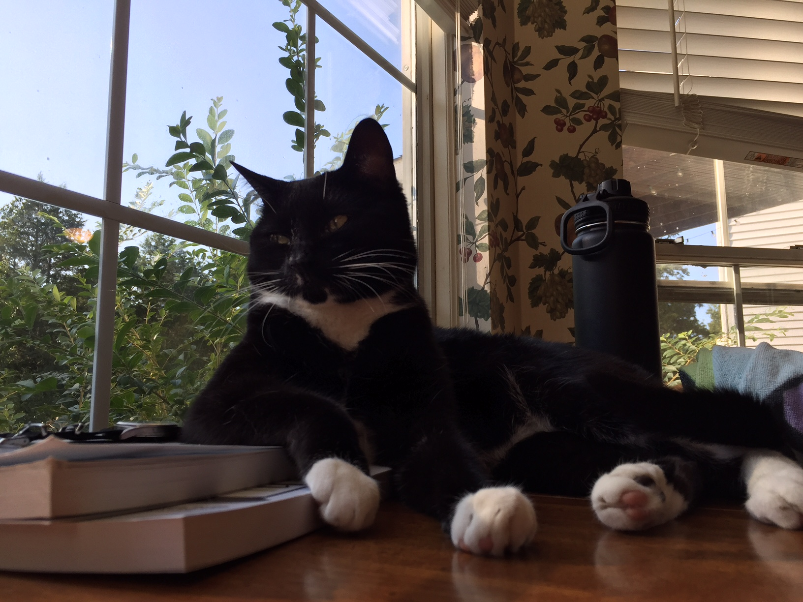

I am student developer at Nashville Software School, where I have begun studying fullstack web development concentrating on Node.js and other Javascript-based languages.
My interest in web development was peaked during an early era of social media (yes, I am speaking of Myspace). I caught the bug diving through the open HTML & being able to design to my heart's content.
I have chosen to pursue a career in software development to grow in a career based on the skills and tools to create, to be engaged in a community focused on innovation, & to contribute to society by the working towards better innercommunication for all through the web.
Please view the Dev page on this site for a portfolio of my personal work & current/collabrative work at Nashville Software School. You can also visit my GitHub, linked on the Contact Page, to view my development portfolio.
For my time away from glowing squares, my interests will be listed (hopefully in a creative manner) soon in the space given below. For now, here's a pic of my deng catto doing a heckin' lounge.
